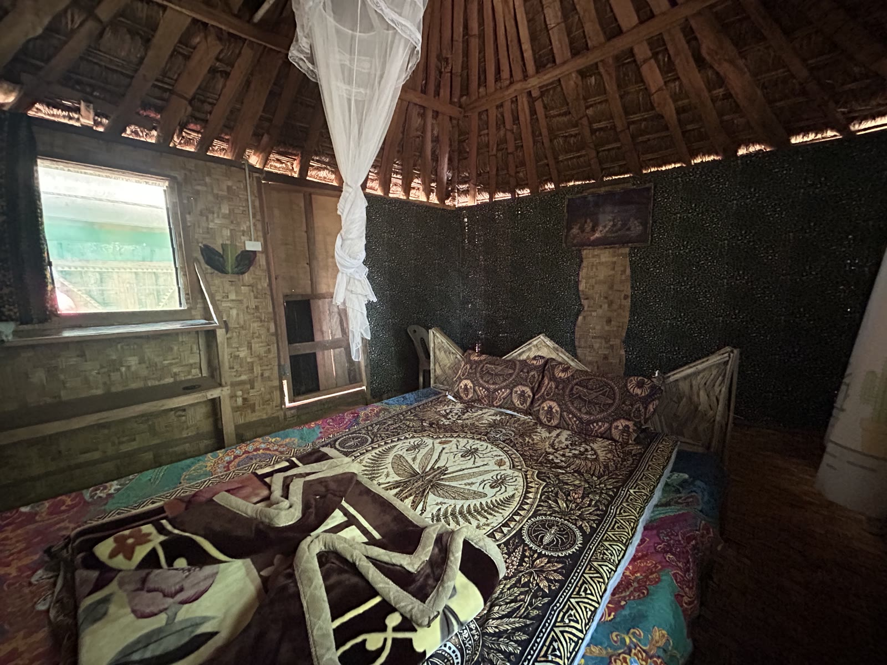

Insect Hunters Town
Lodge & Touren im Hochland von Papua-Neuguinea
Lodge und Touren in Mindima, Chimbu Province, auf rund 1700 m — Kultur, Natur und Festivals im grünen Hochland. Einfach anfragen — wir gestalten die Reise mit Ihnen.
Willkommen
Hochland-Atmosphäre. Persönliche Touren.
Insect Hunters Town verbindet Lodge-Aufenthalt und Touren in Mindima: Twin-, Double- und Single-Zimmer mit eigenem Bad, Restaurant und traditionelle Häuser — und Programme, die wir auf Wunsch anpassen.
Kein Online-Booking. Keine Festpreise auf der Website. Sie schreiben uns — wir antworten mit einem klaren Vorschlag.
Ausgewählte Touren
Tage & Nächte — klar strukturiert
Wie bei erfahrenen Hochland-Operatoren: Programme mit Dauerangabe. Jede Tour ist auf Anfrage anpassbar.
Kultur & Dorfleben
Einführung in Mindima und Umgebung — Begegnungen, Landschaft, Lodge-Basis.
Anpassbar auf AnfrageNatur & Hochlandpfade
Wandern, Beobachtung und Zeit in der Lodge — Programmtext folgt vom Betreiber.
Anpassbar auf AnfrageFestivals
Saisonale Festivals und kulturelle Höhepunkte — Termine und Details auf Anfrage.
Anpassbar auf AnfrageDie Lodge
Insect Hunters Town Lodge
Auf rund 1700 m in Mindima: Zimmer mit eigenem Bad, Restaurant und traditionelle Häuser — nur etwa eine Minute zu Fuß von den Skeleton Show Grounds. 100 % lokal geführt; das Geld bleibt bei den Gemeinschaften vor Ort.

Anfrage
Bereit für Ihre Hochlandreise?
Sagen Sie uns Zeitraum, Gruppe und Interessen. Wir melden uns mit einem individuellen Vorschlag — per E-Mail, ohne Online-Buchung.